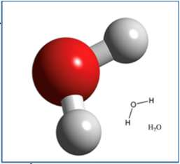

Stabilité des entités chimiques
Ce chapitre sera débloqué en fin de séquence, au rythme de la classe. Le code de déblocage est transmis via le cahier de textes — il figure aussi en bas de ta fiche de cours.
Sommaire du chapitre
Physique-Chimie · Seconde générale · Thème 1 — Constitution et transformations de la matière
Stabilité des entités chimiques
Thème 1 · Chapitre 7 — cours & exercices corrigés
01 Stabilité des gaz nobles
A — Configuration électronique des gaz nobles
Dans la nature, les éléments chimiques restent rarement isolés et forment des molécules ou des cristaux ioniques. Les gaz nobles, eux, dans la grande majorité des cas, sont inertes chimiquement. Ils ne forment pas de liaisons avec les autres atomes et n'ont pas de forme ionique. Pourquoi ?
| colonnes → périodes ↓ |
11 | 22 | 133 | 144 | 155 | 166 | 177 | 188 |
|---|---|---|---|---|---|---|---|---|
| 1 | H1hydrogène | He2hélium | ||||||
| 2 | Li3lithium | Be4béryllium | B5bore | C6carbone | N7azote | O8oxygène | F9fluor | Ne10néon |
| 3 | Na11sodium | Mg12magnésium | Al13aluminium | Si14silicium | P15phosphore | S16soufre | Cl17chlore | Ar18argon |
| 4 | K19potassium | Ca20calcium | Légende : le symbole chimique (C), le numéro atomique Z en rouge (6) et le nom de l'élément (carbone). | |||||
Donner la configuration électronique de tous les atomes appartenant à la famille des gaz nobles (Z ≤ 18).
Voir la correction
[He] = 1s2
[Ne] = 1s2 2s2 2p6
[Ar] = 1s2 2s2 2p6 3s2 3p6
Les couches externes des gaz nobles sont toutes saturées par 8 électrons (un octet), à l'exception de l'hélium avec 2 électrons (un duet), ce qui leur confère une très grande stabilité.
Les gaz nobles sont parfois appelés gaz rares ou gaz inertes.
B — Stabilité
Les gaz nobles sont les éléments chimiques qui ont les configurations électroniques les plus stables du point de vue énergétique.
Un atome n'étant que très rarement isolé, sa configuration électronique va évoluer de sorte à correspondre à celle du gaz noble le plus proche. Pour cela il pourra :
- donner ou récupérer des électrons et ainsi se transformer en ion ;
- s'associer à un autre atome avec lequel il mettra des électrons en commun au sein de doublets liants formant ainsi une liaison covalente.
Comment les configurations électroniques des atomes de fluor F et de béryllium Be vont-elles évoluer pour gagner en stabilité ?
Voir la correction
La configuration électronique du fluor [F] = 1s2 2s2 2p5 évolue vers celle du néon [Ne] = 1s2 2s2 2p6 (gaz noble le plus proche de lui). L'atome de fluor capte donc 1 électron pour remplir sa couche 2 et devenir l'ion [F−] = [Ne] = 1s2 2s2 2p6.
La configuration électronique du béryllium [Be] = 1s2 2s2 évolue vers celle de l'hélium [He] = 1s2 (gaz noble le plus proche de lui). L'atome de béryllium perd donc 2 électrons, sa couche externe (1) est alors saturée, il est devenu l'ion [Be2+] = [He] = 1s2.
2. La configuration électronique du soufre [S] = 1s2 2s2 2p6 3s2 3p4 évolue vers celle de l'argon [Ar] = 1s2 2s2 2p6 3s2 3p6. L'atome de soufre capte donc deux électrons pour devenir l'ion [S2−] = [Ar] = 1s2 2s2 2p6 3s2 3p6.
02 Ions monoatomiques
Première façon de ressembler à un gaz noble : donner ou récupérer des électrons.
Un ion monoatomique est stable dès lors que sa couche de valence est saturée, comme celle du gaz noble le plus proche.
Ex : [Cl−] = [Ar] = 1s2 2s2 2p6 3s2 3p6 ou [Na+] = [Ne] = 1s2 2s2 2p6.
À droite, l'atome de chlore Cl gagne en stabilité en gagnant un électron, remplissant sa couche 3 et devenant l'ion chlorure Cl− ; sa structure électronique est alors similaire à celle de l'argon Ar. [Cl] → [Cl−] = [Ar] = 1s2 2s2 2p6 3s2 3p6
| à gauche du tableau → cations | à droite → anions | ||||
|---|---|---|---|---|---|
| colonne | 1 | 2 | 3 | 6 | 7 |
| valence de l'atome | 1 | 2 | 3 | 6 | 7 |
| pour plus de stabilité | 1 électron cédé | 2 électrons cédés | 3 électrons cédés | 2 électrons captés | 1 électron capté |
| charge de l'ion | +e | + 2e | + 3e | − 2e | − e |
Pour gagner en stabilité, quels ions monoatomiques sont formés par les atomes d'oxygène O et de lithium Li ?
Voir la correction
L'atome d'oxygène O ([O] = 1s2 2s2 2p4) n'est pas stable, sa couche externe n'est pas saturée. Il lui manque 2 électrons pour respecter la règle de l'octet et prendre la configuration électronique du néon Ne. En gagnant 2 électrons, il devient l'ion O2−.
[O] → [O2−] = [Ne] = 1s2 2s2 2p6
L'atome de lithium Li ([Li] = 1s2 2s1) n'est pas stable, sa couche externe n'est pas saturée. Il doit perdre 1 électron pour respecter la règle du duet et prendre la configuration électronique de l'hélium He. Ce faisant, il devient l'ion Li+.
[Li] → [Li+] = [He] = 1s2
03 Molécules
Seconde façon de ressembler à un gaz noble : partager des électrons avec un voisin.
Pour avoir un environnement électronique identique à celui d'un gaz noble, les atomes peuvent mettre leurs électrons en commun, toujours pour plus de stabilité. C'est la liaison covalente ou liaison de valence.
Une molécule est une entité chimique stable et électriquement neutre, formée par au moins deux atomes liés par une liaison covalente.
A — Représenter une liaison covalente
Deux électrons, provenant chacun d'un atome différent, et participant à une liaison, forment un doublet liant. Ce doublet liant est représenté par un trait entre les symboles des deux atomes.
Chaque liaison a une énergie, appelée énergie de liaison, dont la valeur est égale à l'énergie nécessaire pour la rompre.

Les atomes d'hydrogène de configuration électronique [H] = 1s1 récupèrent de l'oxygène un électron pour remplir leur couche 1 et sont ainsi stabilisés. L'atome d'oxygène [O] = 1s2 2s2 2p4 se stabilise lui aussi grâce aux deux électrons de ses voisins. Modèle moléculaire : image reprise du diaporama d'origine, licence non identifiée.
Pour gagner en stabilité, combien de liaisons covalentes doivent former les atomes de carbone C et d'azote N dans une molécule ?
Voir la correction
L'atome de carbone a besoin de 4 électrons pour respecter la règle de l'octet. Il va donc former 4 liaisons dans une molécule.
L'atome d'azote a besoin de 3 électrons pour respecter la règle de l'octet. Il va donc former 3 liaisons dans une molécule.
Représenter les molécules de CO2 et CH4 en faisant figurer les liaisons covalentes entre atomes.
Voir la correction
B — Modèle de Lewis d'une molécule
Les traits entre les symboles ne disent pas tout : où sont passés les autres électrons de valence ?
Le modèle de Lewis (ou schéma de Lewis) d'une molécule indique l'organisation des électrons de valence de chaque atome.
[C] = 1s2 2s2 2p2
4 électrons de valence
[F] = 1s2 2s2 2p5
7 électrons de valence
Ces électrons sont associés :
- en doublets liants (liaisons covalentes) ;
- en doublets non-liants, formés par les électrons ne participant pas à la liaison, représentés chacun par un trait autour du symbole.
Représenter les modèles de Lewis des molécules suivantes : fluorure d'hydrogène HF | dioxyde de carbone CO2 | méthane CH4 | dioxygène O2 | diazote N2 | ammoniac NH3.
| 11,0HHydrogène | 24,0HeHélium | ||||||
| 36,9LiLithium | 49,0BeBéryllium | 510,8BBore | 612,0CCarbone | 714,0NAzote | 816,0OOxygène | 919,0FFluor | 1020,2NeNéon |
| 1123,0NaSodium | 1224,3MgMagnésium | 1327,0AlAluminium | 1428,1SiSilicium | 1531,0PPhosphore | 1632,1SSoufre | 1735,5ClChlore | 1840,0ArArgon |
Voir la correction
✓ Pour le DS, je sais :
Liste proposée en V1 — à valider par M. Van Hoorde.
M. Van HoordeLycée général Isaac de l'Étoile · Poitiers